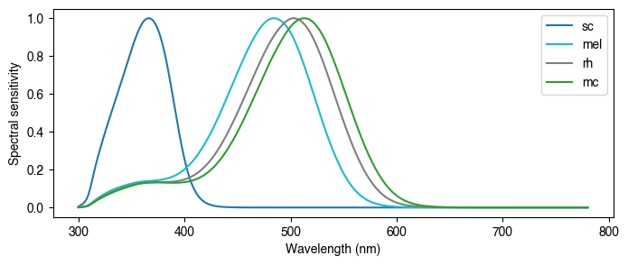
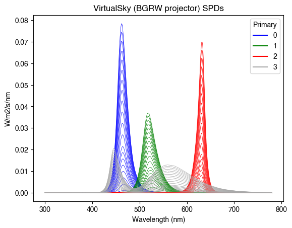
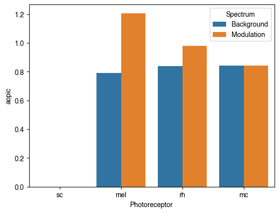
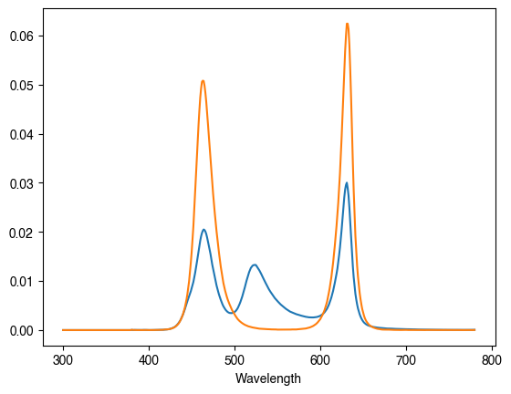

Rodent observer¶
[4]:
import pandas as pd
from pysilsub import observers, problems
# Create custom rodent model
class Rodent(observers._Observer):
def __init__(self):
super().__init__()
# Instantiate observer class
mouse = Rodent()
# Add action spectra and modify class attributes
mouse.action_spectra = pd.read_csv(
'../../data/rodent_action_spectra.csv',
index_col='Wavelength'
)
mouse.photoreceptors = mouse.action_spectra.columns.tolist()
mouse.photorecptor_colors = {
"sc": "tab:blue",
"mel": "tab:cyan",
"rh": "tab:grey",
"mc": "tab:green"
}
mouse.plot_action_spectra(figsize=(8, 3));

[35]:
ssp = problems.SilentSubstitutionProblem.from_package_data('VirtualSky')
ssp.observer = mouse
# Adjust wavelengths
ssp.calibration = ssp.calibration.reindex(range(300, 781, 1), axis=1).fillna(0)
_ = ssp.plot_calibration_spds()

[40]:
ssp.ignore = ['rh']
ssp.minimize = ['sc', 'mc']
ssp.modulate = ['mel']
ssp.target_contrast = 'max'
ssp.print_problem()
************************************************************
*************** Silent Substitution Problem ****************
************************************************************
Device: VirtualSky (BGRW projector)
Ignoring: ['rh']
Minimising: ['sc', 'mc']
Modulating: ['mel']
Target contrast: [inf]
Background: None
[41]:
solution = ssp.optim_solve()
> No background specified, will optimise background.
> Aiming to maximise contrast.
> Performing local optimization with SLSQP.
NIT FC OBJFUN GNORM
1 10 -3.389784E+01 2.926002E+00
2 20 -2.168352E+01 4.704042E+00
3 31 -1.711569E+00 4.996060E+00
4 41 -1.251245E+00 6.640282E+00
5 52 -1.456550E+00 6.593732E+00
6 61 -2.746210E+00 7.927179E+00
7 74 -3.673497E+00 7.949676E+00
8 88 -2.335068E+00 7.950416E+00
9 103 -2.209161E+00 7.950869E+00
10 113 -3.698942E+00 8.620922E+00
11 123 -6.713475E+00 9.539943E+00
12 133 -4.348392E+00 1.105116E+01
13 143 -2.137555E+00 1.573314E+01
14 155 -2.051828E+00 1.553882E+01
15 165 -2.102160E+00 1.503273E+01
16 174 -2.274485E+00 1.334335E+01
17 183 -6.662861E+00 1.488501E+01
18 194 -2.526530E+00 1.528350E+01
19 204 -2.208166E+00 1.656541E+01
20 215 -1.426067E+00 1.643031E+01
21 224 -1.370040E+00 8.669017E+00
22 233 -1.127208E+00 8.449977E+00
23 242 -1.065266E+00 7.098389E+00
24 252 -8.936679E-01 7.001534E+00
25 262 -8.913613E-01 6.532007E+00
26 273 -9.100346E-01 6.521976E+00
27 285 -9.078158E-01 6.520261E+00
28 294 -6.391596E-01 5.956228E+00
29 303 -6.413379E-01 4.664498E+00
30 312 -5.675027E-01 4.658270E+00
31 323 -5.685447E-01 4.600983E+00
32 332 -5.565833E-01 4.301964E+00
33 342 -5.240248E-01 4.270598E+00
34 351 -4.995455E-01 4.120913E+00
35 360 -4.849796E-01 4.021446E+00
36 369 -4.777084E-01 3.962885E+00
37 378 -4.756225E-01 3.933846E+00
38 388 -4.740790E-01 3.931998E+00
39 397 -4.727658E-01 3.919199E+00
40 406 -4.725450E-01 3.913765E+00
41 415 -4.727932E-01 3.912768E+00
42 424 -4.746490E-01 3.913447E+00
43 433 -4.847149E-01 3.919689E+00
44 442 -5.118926E-01 3.954165E+00
45 452 -7.240140E-01 3.971294E+00
46 463 -6.663637E-01 3.985551E+00
47 474 -4.939278E-01 4.003372E+00
48 484 -6.068294E-01 4.002259E+00
49 496 -5.193089E-01 4.002179E+00
50 506 -5.209107E-01 4.024806E+00
51 515 -5.157816E-01 4.084084E+00
52 524 -5.173275E-01 4.065034E+00
53 533 -5.137103E-01 4.062543E+00
54 544 -5.703958E-01 4.062593E+00
55 556 -5.887695E-01 4.063456E+00
56 568 -5.282504E-01 4.064355E+00
57 581 -5.261369E-01 4.451864E+00
58 591 -5.264777E-01 4.456109E+00
59 601 -5.270223E-01 4.460165E+00
60 611 -5.280089E-01 4.464167E+00
61 621 -5.239855E-01 4.484879E+00
62 630 -5.222842E-01 4.086040E+00
63 639 -5.230888E-01 4.079666E+00
64 648 -5.237143E-01 4.103643E+00
65 657 -5.231861E-01 4.104859E+00
66 667 -5.230911E-01 4.104341E+00
67 676 -5.230320E-01 4.103319E+00
68 686 -5.228718E-01 4.103320E+00
69 696 -5.228292E-01 4.103105E+00
70 705 -5.227578E-01 4.102751E+00
71 714 -5.227472E-01 4.102573E+00
72 724 -5.227244E-01 4.102574E+00
73 733 -5.227151E-01 4.102500E+00
74 742 -5.227222E-01 4.102477E+00
75 751 -5.227983E-01 4.102490E+00
76 760 -5.229228E-01 4.102658E+00
77 770 -5.229802E-01 4.102694E+00
78 780 -5.229301E-01 4.102738E+00
79 790 -5.228662E-01 4.102762E+00
80 799 -5.228885E-01 4.102829E+00
81 808 -5.229563E-01 4.102902E+00
82 819 -5.230860E-01 4.102906E+00
83 830 -5.233907E-01 4.102916E+00
84 842 -5.238114E-01 4.102918E+00
85 854 -5.246631E-01 4.102923E+00
86 866 -5.255777E-01 4.102930E+00
87 880 -5.417957E-01 4.102930E+00
88 895 -5.239322E-01 4.102930E+00
89 909 -5.292797E-01 4.102930E+00
90 923 -5.289288E-01 4.102931E+00
Optimization terminated successfully (Exit mode 0)
Current function value: -0.5228967869048644
Iterations: 90
Function evaluations: 931
Gradient evaluations: 90
[42]:
bg_ao, mod_ao = ssp.smlri_calculator(solution.x)
df_ao = (
pd.concat([bg_ao, mod_ao], axis=1)
.T.melt(
value_name="aopic",
var_name="Photoreceptor",
ignore_index=False,
)
.reset_index()
.rename(columns={"index": "Spectrum"})
)
[43]:
import seaborn as sns
sns.barplot(
data=df_ao, x="Photoreceptor", y="aopic", hue="Spectrum")
[43]:
<AxesSubplot: xlabel='Photoreceptor', ylabel='aopic'>

[45]:
bg_spd = ssp.predict_multiprimary_spd(
solution.x[: ssp.nprimaries], name="Background"
)
mod_spd = ssp.predict_multiprimary_spd(
solution.x[ssp.nprimaries : ssp.nprimaries * 2],
name="Modulation",
)
[47]:
bg_spd.plot(); mod_spd.plot()
[47]:
<AxesSubplot: xlabel='Wavelength'>
